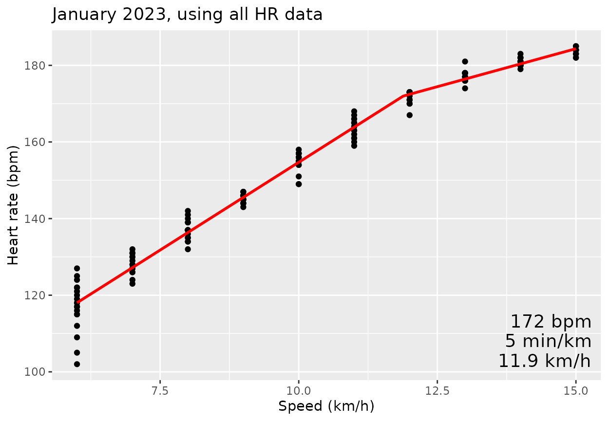
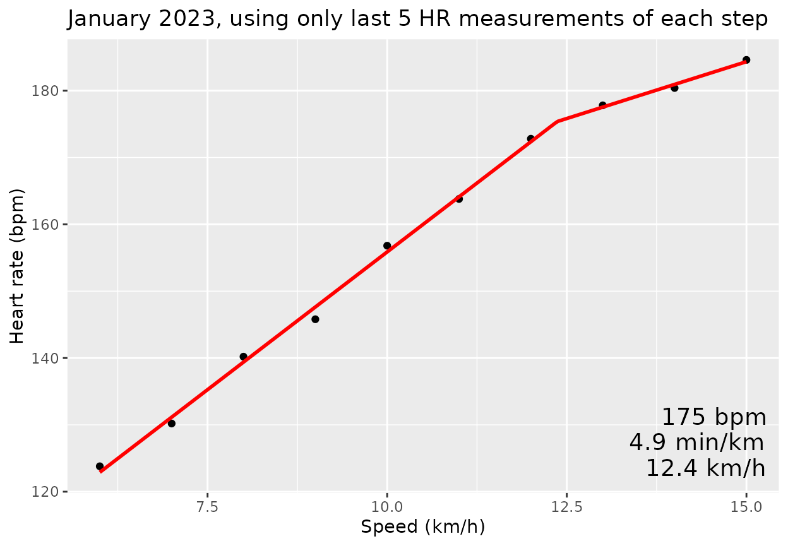
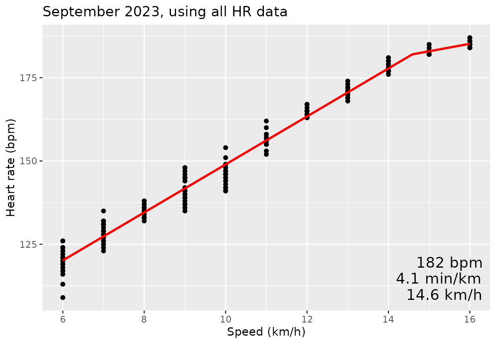
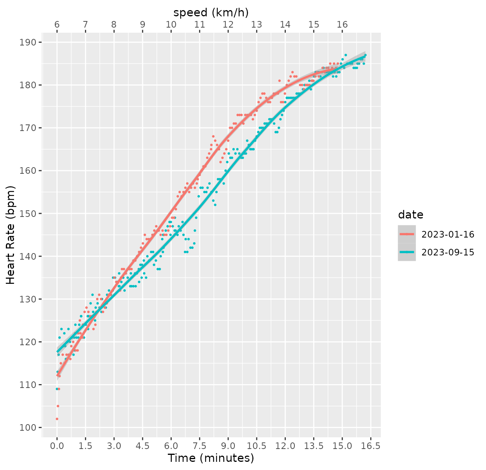
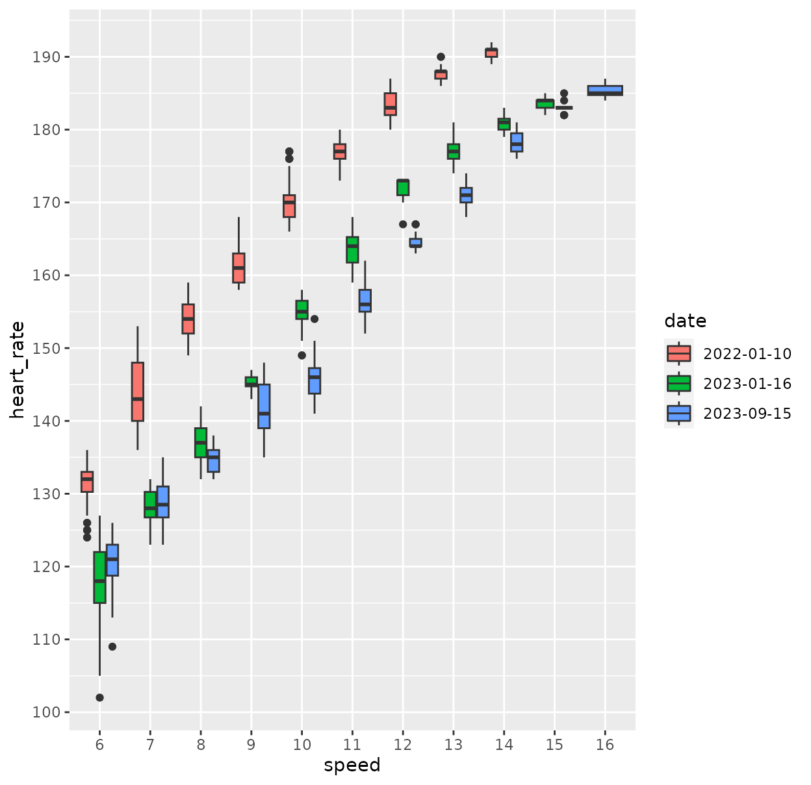

Analysis of treadmill fitness test data
usage.RmdHow to figure out startminutes and endminutes
Useful in case the run was started before the start of the actual step test, or ended after.
fname = system.file("extdata/2023-01-16.tcx", package = "TreadmillFitnessTest")
tmp <- prepdata(fname, startminutes = 0, endminutes = 100,
useDeviceSpeed = TRUE)
plot(tmp$minutes, tmp$speed)
plot(tmp$minutes, tmp$cadence_running)
plot(tmp$minutes, tmp$heart_rate)By iteratively adjusting the startminutes and
endminutes and replotting, or just replotting with adjusted
axes, I found that the correct start time was at 0.15 minutes and
correct end time at 15 minutes.
January 2023 test
Import the data and show the same plots.
dat202301 <- prepdata(fname, startminutes = 0.15, endminutes = 15,
useDeviceSpeed = FALSE)
(dat202301$date = substr(dat202301$time[1], 1, 10))
#> [1] "2023-01-16"
plot(dat202301$minutes, dat202301$speed)
plot(dat202301$minutes, dat202301$cadence_running)
plot(dat202301$minutes, dat202301$heart_rate)Model fitting
This model uses all available data points:
fitmodel(dat202301, alldata = TRUE)
#> [1] "Threshold alpha: 11.8861748818123"
#> [1] ""
#> [1] "Model coefficients: Beta[0], Beta[1], Beta[2]"
#> (Intercept) x w
#> 63.027275 9.167789 -5.201732
#> 
And this model uses only the final 5 measurements in each step:
fitmodel(dat202301, alldata = FALSE)
#> [1] "Threshold alpha: 12.3957752900061"
#> [1] ""
#> [1] "Model coefficients: Beta[0], Beta[1], Beta[2]"
#> (Intercept) x w
#> 73.750685 8.211093 -4.847104
#> 
Sept 15, 2023 test
fname = system.file("extdata/2023-09-15.tcx", package = "TreadmillFitnessTest")
dat202309 <- prepdata(fname, startminutes = 23.8, endminutes = 40.1,
useDeviceSpeed = FALSE)
dat202309$date = substr(dat202309$time[1], 1, 10)
with(dat202309, plot(minutes, speed))Model fitting
fitmodel(dat202309, alldata = TRUE)
#> [1] "Threshold alpha: 14.5862765638889"
#> [1] ""
#> [1] "Model coefficients: Beta[0], Beta[1], Beta[2]"
#> (Intercept) x w
#> 76.921892 7.205029 -4.961977
#> 
fitmodel(dat202309, alldata = FALSE)
#> [1] "Threshold alpha: 14.344221689494"
#> [1] ""
#> [1] "Model coefficients: Beta[0], Beta[1], Beta[2]"
#> (Intercept) x w
#> 82.813864 6.879501 -4.279486
#> 2022-23 together
Some plots demonstrating comparison of two tests. First join the two data.frames, and convert date and speed to factors (to make plots appear the way I want them to).
xall <- full_join(x=dat202309, y=dat202301) |>
mutate(date = factor(date)) |>
mutate(speed = factor(speed))
#> Joining with `by = join_by(time, latitude, longitude, altitude, distance,
#> heart_rate, speed, cadence_running, cadence_cycling, power, temperature,
#> minutes, date)`Boxplot of heart rate vs speed
ggplot(xall, aes(x=speed, y=heart_rate, fill = date)) +
geom_boxplot() +
scale_y_continuous(breaks=seq(90, 200, by=10)) ## Scatterplot with Loess smoothing curve for heart rate vs speed
## Scatterplot with Loess smoothing curve for heart rate vs speed
ggplot(xall, aes(x = minutes, y = heart_rate, color = date)) +
geom_point(size = 0.5) +
geom_smooth() +
scale_y_continuous(breaks = seq(90, 200, by = 10), name = "Heart Rate (bpm)") +
scale_x_continuous(breaks = seq(0, 16.5, by = 1.5), name = "Time (minutes)",
sec.axis = sec_axis( ~ . / 1.5 + 6,
name = "speed (km/h)",
breaks = seq(6, 16, by = 1)))
#> `geom_smooth()` using method = 'loess' and formula = 'y ~ x'
Scatterplot with Loess smoothing curve for running cadence vs speed
ggplot(xall, aes(x = minutes, y = 2 * cadence_running, color = date)) +
geom_point(size = 0.5) +
geom_smooth() +
scale_y_continuous(breaks = seq(150, 200, by = 10), name = "Cadence (spm)") +
scale_x_continuous(breaks = seq(0, 16.5, by = 1.5), name = "Time (minutes)",
sec.axis = sec_axis( ~ . / 1.5 + 6,
name = "speed (km/h)",
breaks = seq(6, 16, by = 1)))
#> `geom_smooth()` using method = 'loess' and formula = 'y ~ x'